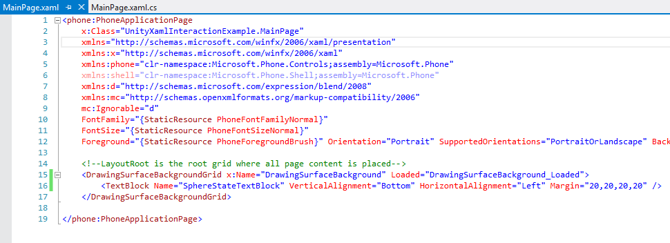
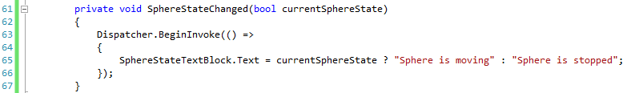
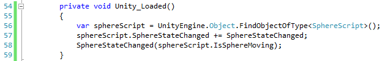
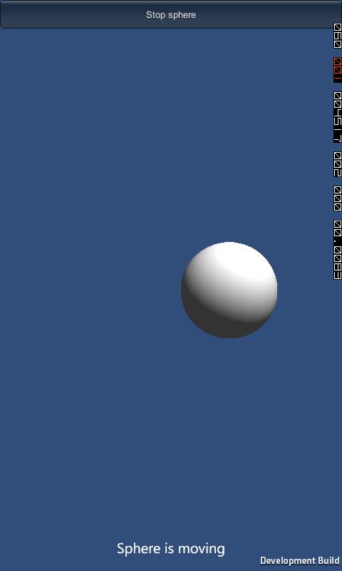

Interaction between Unity and Windows Phone
In this guide we will interact between Unity and Windows Phone by making Windows Phone aware of game state. Specifically, we will have a sphere moving on the screen which can be stopped/made to move using Unity GUI.Button. Windows Phone will display a XAML text block which will accurately say the current state of the sphere (whether it's moving or not).
We begin by creating a new Unity Project. Add a sphere and a new C# script to the scene, and add this code to the script:
using System;
using UnityEngine;
public class SphereScript : MonoBehaviour
{
private bool m_IsMoving = true;
private bool m_IsMovingLeft = false;
public Camera GameCamera;
public event Action<bool> SphereStateChanged;
public bool IsSphereMoving { get { return m_IsMoving; } }
void Start()
{
if (GameCamera == null)
{
throw new Exception("Camera is not attached to the sphere script!");
}
}
void FixedUpdate()
{
if (!m_IsMoving)
{
return;
}
if (m_IsMovingLeft)
{
transform.position -= new Vector3(0.2f, 0.0f);
if (GameCamera.WorldToScreenPoint(transform.position).x < 100.0f)
{
m_IsMovingLeft = false;
}
}
else
{
transform.position += new Vector3(0.2f, 0.0f);
if (GameCamera.WorldToScreenPoint(transform.position).x > Screen.width - 100.0f)
{
m_IsMovingLeft = true;
}
}
}
void OnGUI()
{
var buttonText = m_IsMoving ? "Stop sphere" : "Start sphere movement";
if (GUI.Button(new Rect(0, 0, Screen.width, 40), buttonText))
{
m_IsMoving = !m_IsMoving;
if (SphereStateChanged != null)
{
SphereStateChanged(m_IsMoving);
}
}
}
}
Don't forget to attach main camera to the sphere script in the inspector.
Build the project for Windows Phone 8 and open the resulting Visual Studio solution.
Add a TextBlock XAML element to MainPage.xaml file:

Add sphere state changed event handling method. Remember, XAML can only be interacted with through the UI thread, so we use Dispatcher to execute our method there:

Finally, attach that handler method to our sphere state changed event which we declared in the script.

Result
